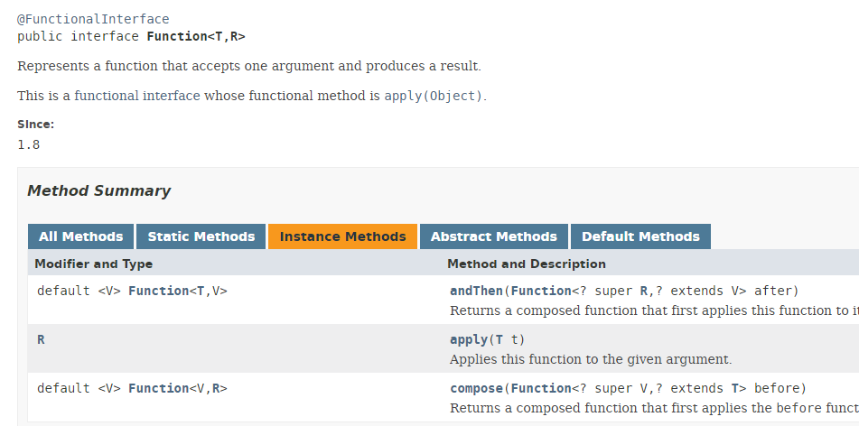
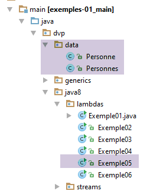
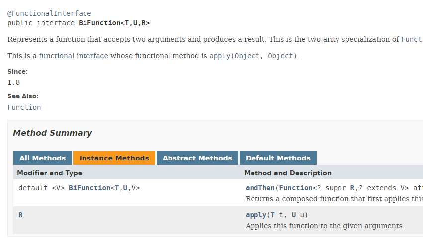
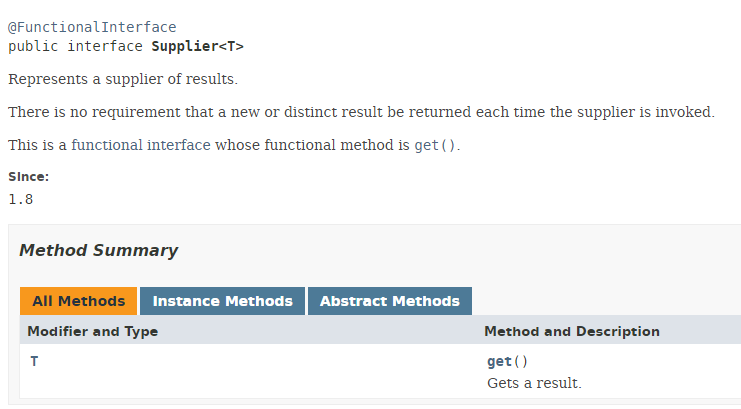

4. Java 8 的 lambda 表达式
4.1. 示例-01 - 函数接口与 lambda 表达式
 |
请看以下代码：
package dvp.java8.lambdas;
public class Exemple01 {
public static void main(String[] args) {
// 匿名类
I1 ia1 = new I1() {
@Override
public void doSomething() {
System.out.println("ia1.doSomething");
}
};
I2 ia2 = new I2() {
@Override
public String getSomething(double value) {
return String.format("ia2.getSomething(%s)", value);
}
};
// lambda表达式
I1 ib1 = () -> System.out.println("ib1.lambda");
I2 ib2 = (value) -> String.format("ib2.lambda(%s)", value);
I1 ib3 = () -> {
System.out.println("ib3.lambda");
};
I2 ib4 = (double value) -> {
return String.format("ib4.lambda(%s)", value);
};
// 应用程序
ia1.doSomething();
System.out.println(ia2.getSomething(4.3));
ib1.doSomething();
System.out.println(ib2.getSomething(5.8));
ib3.doSomething();
System.out.println(ib4.getSomething(10.1));
}
}
@FunctionalInterface
interface I1 {
void doSomething();
}
@FunctionalInterface
interface I2 {
String getSomething(double value);
}
- 第 41-44 行：定义了一个函数接口 I1。函数接口是指仅包含一个方法的接口。它与第 41 行中可选的注解 [@FunctionalInterface] 无关；
- 第 46-49 行：第二个功能接口 I2；
- 第6-19行：接口I1和I2通过匿名类实现，这是在引入lambda函数之前最常见的解决方案；
- 第 21-29 行：接口 I1 和 I2 通过 lambda 函数实现；
- 第 7-12 行：使用匿名类实现接口 I1。使用匿名类实现接口 I 的语法如下：
其中 m1、m2、... 是接口 I 定义的方法。
- 第 14-19 行：使用匿名类实现接口 I2；
- 第22行：使用lambda函数实现接口I1。此处利用了函数接口仅有一个方法的特点。因此，该lambda函数实现了这个唯一的方法M。其语法如下：
如果编译器能从上下文中推导出类型（类型推断），则可以省略类型 T1、T2 和 Tn。
- 第 22 行：实现方法 [I1.doSomething]，其签名如下：
void doSomething();
[doSomething] 是一个无参数且不返回结果的方法。 其 lambda 实现可以像第 22 行那样编写，也可以像第 24-26 行那样编写，即可以在 lambda 函数的代码周围添加大括号。如果该代码仅包含一条语句（如本例），则可以省略这些大括号；
- 第 23 行：方法 [I1.getSomething] 的实现，其签名如下：
String getSomething(double value);
[getSomething] 接受类型为 [double] 的参数，并返回类型为 [String] 的结果。其 lambda 实现可以是第 23 行，也可以是第 27-29 行。 在第23行的实现中：
- 参数 [value] 的类型被省略。此时将使用 [getSomething] 签名中找到的 [double] 类型；
- lambda 代码未用圆括号包围。因此 lambda 的结果即为该代码中唯一表达式的值，此处为：String.format("ib2.lambda(%s)", value)；
在第 27-29 行的实现中：
- 显式声明了参数 [value] 的类型；
- 使用 [return] 来呈现 lambda 表达式的结果。这种情况下，必须添加大括号；
- 第32-37行：调用各种匿名函数和lambda表达式；
得到的结果如下：
4.2. 示例-02 - 函数接口 Predicate<T>
 |
大多数情况下，我们处理的是库中的函数式接口，而不是我们自己定义的函数式接口。 这里，我们关注的是定义在 [java.util.function] 包中的函数式接口 [Predicate]，该包汇集了 Java 8 的大部分函数式接口。该接口定义如下：

我们曾提到，一个函数式接口通常只有一个方法。但这里却有四个。Java 8 带来的另一项创新是引入了接口默认方法的概念，其特征是使用关键字 [default]。这里有三个这样的方法。这些方法的特点是具有默认实现。 因此，实现包含默认方法的接口的类，没有义务必须实现这些默认方法。这样，想要实现接口 [Predicate] 的类，只需强制实现一个方法：方法 [test]。 因此，接口 [Predicate] 确实是一个功能接口。我们可以定义：功能接口是指其实现中仅包含一个必选方法的接口。如果它包含多个方法，其余方法必须带有 [default] 关键字。
方法 [Predicate<T>.test] 接收一个类型为 T 的参数，并返回一个布尔值。该接口通常用于过滤集合。为说明其用法，我们将使用以下数据：
package dvp.data;
import com.fasterxml.jackson.core.JsonProcessingException;
import com.fasterxml.jackson.databind.ObjectMapper;
public class Personne {
public enum Sexe {HOMME,FEMME};
// 数据
private String nom;
private int age;
private double poids;
private Sexe sexe;
// 构造函数
public Personne() {
}
public Personne(String nom, Sexe sexe, int age, double poids) {
this.nom = nom;
this.sexe=sexe;
this.age = age;
this.poids = poids;
}
// getter 和 setter
...
// toString
@Override
public String toString(){
try {
return new ObjectMapper().writeValueAsString(this);
} catch (JsonProcessingException e) {
return e.getMessage();
}
}
}
- 第 32-38 行：方法 [toString] 返回该人员的字符串 jSON；
类 [Personnes] 定义了一个包含 3 个人的列表：
package dvp.data;
import com.fasterxml.jackson.core.JsonProcessingException;
import com.fasterxml.jackson.databind.ObjectMapper;
import java.util.Arrays;
import java.util.List;
public class Personnes {
private static List<Personne> personnes = Arrays.asList(new Personne("jean", Personne.Sexe.HOMME, 20, 70),
new Personne("marie", Personne.Sexe.FEMME, 10, 30), new Personne("camille", Personne.Sexe.FEMME, 30, 55));
public static List<Personne> get() {
return personnes;
}
public static String toString(List<Personne> liste) {
try {
return new ObjectMapper().writeValueAsString(liste);
} catch (JsonProcessingException e) {
return e.getMessage();
}
}
}
- 第10-11行：包含3个人的列表；
- 第13-15行：获取该列表的静态方法；
- 第17-23行：一个静态方法，用于根据作为参数传递的人员列表生成字符串jSON；
这些数据将由以下代码进行处理：
package dvp.java8.lambdas;
import java.util.ArrayList;
import java.util.List;
import java.util.function.Predicate;
import dvp.data.Personne;
import dvp.data.Personnes;
public class Exemple02 {
public static void main(String[] args) {
// 由匿名类实现的谓词
Predicate<Personne> filterPoids=new Predicate<Personne>() {
@Override
public boolean test(Personne personne) {
return personne.getPoids()<50;
}
};
// 由 lambda 实现的谓词
Predicate<Personne> filterAge = p -> p.getAge() < 28;
// 人员列表
List<Personne> personnes = Personnes.get();
// 显示次数
System.out.println(Personnes.toString(filterPersonnes(personnes, filterAge)));
System.out.println(Personnes.toString(filterPersonnes(personnes, filterPoids)));
}
private static List<Personne> filterPersonnes(List<Personne> personnes, Predicate<Personne> filter) {
// [filter] 过滤列表 [personnes]
List<Personne> personnesFiltrées = new ArrayList<>();
for (Personne p : personnes) {
if (filter.test(p)) {
personnesFiltrées.add(p);
}
}
return personnesFiltrées; }
}
- 第13-18行：通过匿名类实现Predicate<Personne>接口。这是一个针对人员体重的筛选器；
- 第20行：通过一个lambda函数实现Predicate<Personne>接口。这是一个基于人员年龄的过滤器。根据上述说明，它也可以按以下方式编写：
Predicate<Personne> filterAge = (Personne p) -> {
return (p.getAge() < 28);
};
但第20行的版本更为简洁。参数p的类型由上下文推导得出。 此处构建了一个类型 [Predicate<Personne>]。因此，所实现方法的签名即为 [boolean test(Personne param)]。故第 20 行中 p 的隐式类型即为 [Personne]；
- 第 22 行：获取预定义的人员列表；
- 第24行：根据年龄对人员进行筛选；
- 第 25 行：根据体重进行筛选。在这两种情况下，都会显示经过筛选的列表中的字符串 jSON；
- 第28-37行：一个静态方法，
- 接受的参数为：待筛选的人员列表和筛选器。该筛选器是接口 [Predicate<Personne>] 的实例。为便于表述，本文档在此及后续内容中，将接口 I 的实例统称为实现 I 的类 C 的实例；
- 返回经过筛选后的列表；
- 第32行：调用接口[Predicate]中的方法[test]。根据传递给该方法的过滤器，方法[test]将：
return personne.getPoids()<50;
或
return p.getAge() < 28
执行类 [Exemple02] 得到以下结果：
4.3. 示例-03 - 功能接口 Function<T,R>
 |
函数接口 Function<T,R> 的定义如下：

该接口的唯一方法具有签名 R apply(T t)。它通常用于根据 Collection<T> 类型创建新的 Collection<R> 类型。为说明该接口，我们将使用以下代码：
package dvp.java8.lambdas;
import com.fasterxml.jackson.core.JsonProcessingException;
import com.fasterxml.jackson.databind.ObjectMapper;
import dvp.data.Personne;
import dvp.data.Personnes;
import java.util.ArrayList;
import java.util.List;
import java.util.function.Function;
public class Exemple03 {
public static void main(String[] args) throws JsonProcessingException {
// 使用匿名类实现
Function<Personne, String> mapToName = new Function<Personne, String>() {
@Override
public String apply(Personne personne) {
return personne.getNom();
}
};
// 使用 lambda 表达式实现
Function<Personne, Integer> mapToAge = p -> p.getAge();
// 人员列表
List<Personne> personnes = Personnes.get();
// jSON
ObjectMapper jsonMapper = new ObjectMapper();
// 显示
System.out.println(jsonMapper.writeValueAsString(mapPersonnes(personnes, mapToName)));
System.out.println(jsonMapper.writeValueAsString(mapPersonnes(personnes, mapToAge)));
}
// List<Personne> 转换为 List<T>
private static <T> List<T> mapPersonnes(List<Personne> personnes, Function<Personne, T> mapper) {
List<T> maps = new ArrayList<>();
for (Personne p : personnes) {
maps.add(mapper.apply(p));
}
return maps;
}
}
- 第 15-20 行：通过一个匿名类实现 [Function<Personne, String>] 接口，该类将执行 Personne 到 String 的转换；
- 第 22 行：使用一个 lambda 表达式实现 [Function<Personne, Integer>] 接口，该表达式将执行 Personne 到 Integer 的转换；
- 第 33-39 行：一个静态方法，
- 接受两个参数：第一个参数类型为 List<Personne>，表示待转换的人员列表；第二个参数类型为 Function<Personne, T>，表示一个函数，该函数基于列表中的每一个人创建一个类型为 T 的对象；
- 返回类型为 List<T>，其中每个元素均来自 Personne -> T 的转换；
- 第35-37行：应用Personne -> T的转换。如果方法的第二个参数是对象[mapToName]，则将执行Personne -> String的转换。 如果是对象 [mapToAge]，则将执行 Personne -> Integer 的转换；
所得结果如下：
4.4. 示例-04 - Consumer<T> 功能接口
 |
Consumer<T> 功能接口定义如下：

该接口的唯一方法的签名是：void accept(T t)。该方法利用（消耗）其参数，且不返回任何结果。为了说明这一点，我们将使用以下代码：
package dvp.java8.lambdas;
import java.util.List;
import java.util.function.Consumer;
import dvp.data.Personne;
import dvp.data.Personnes;
public class Exemple04 {
public static void main(String[] args) {
// 人员列表
List<Personne> personnes = Personnes.get();
// 匿名实现
Consumer<Personne> consumerAge = new Consumer<Personne>() {
@Override
public void accept(Personne personne) {
System.out.printf(" age de %s = %s%n", personne.getNom(), personne.getAge());
}
};
// lambda 实现
Consumer<Personne> consumerPoids = p -> System.out.printf(" poids de %s = %s%n", p.getNom(), p.getPoids());
// 显示
for (Personne p : personnes) {
consumerAge.accept(p);
}
System.out.println("--------");
for (Personne p : personnes) {
consumerPoids.accept(p);
}
}
}
- 第 14-19 行：接口 [Consumer<Personne>] 由一个匿名类实现，该类的 [accept] 方法用于显示该人的姓名和年龄；
- 第 21 行：接口 [Consumer<Personne>] 由一个 lambda 函数实现，其隐含方法 [accept] 显示该人的姓名和体重；
- 第23-25行：人员列表被[consumerAge]的实现所调用；
- 第 27-29 行：人员列表被 [consumerPoids] 实现所调用；
结果如下：
4.5. 示例-05 - 功能接口 BiConsumer<T,U>
 |
功能接口 BiConsumer<T,U> 定义如下：

该接口的唯一方法具有以下签名：void accept(T t, U u)。它接受类型 T 以及附加信息 U u。我们将通过以下代码演示其用法：
package dvp.java8.lambdas;
import dvp.data.Personne;
import dvp.data.Personnes;
import java.util.List;
import java.util.function.BiConsumer;
public class Exemple05 {
public static void main(String[] args) {
// 人员列表
List<Personne> personnes = Personnes.get();
// 匿名实现
BiConsumer<Personne, Integer> biconsumerAge = new BiConsumer<Personne, Integer>() {
@Override
public void accept(Personne personne, Integer integer) {
personne.setAge(personne.getAge() + integer);
System.out.printf("age de %s = %s%n", personne.getNom(), personne.getAge());
}
};
// lambda 实现
BiConsumer<Personne, Integer> biconsumerPoids = (p, i) -> {
p.setPoids(p.getPoids() + i);
System.out.printf("poids de %s = %s%n", p.getNom(), p.getPoids());
};
// 显示
for (Personne p : personnes) {
biconsumerAge.accept(p, 100);
}
System.out.println("--------");
for (Personne p : personnes) {
biconsumerPoids.accept(p, 200);
}
}
}
- 第 14-20 行：使用匿名类实现 BiConsumer<T,U> 接口。方法 [apply] 利用其第二个参数更新作为第一个参数传递的人的年龄。随后显示结果；
- 第 22-25 行：使用 lambda 函数实现 BiConsumer<T,U> 接口。隐含的 [apply] 方法使用其第二个参数来更新作为第一个参数传递的人的体重。随后它显示结果；
- 第 27-29 行：使用 [biconsumerAge] 实现处理人员列表；
- 第 31-33 行：通过 [biconsumerPoids] 实现处理人员列表；
所得结果如下：
4.6. 示例-06 - 功能接口 BiFunction<T,U,R>
 |
功能接口 BiFunction<T,U,R> 定义如下：

该接口的唯一方法具有以下签名：R apply(T t, U u)。该方法与方法 [BiConsumer.apply] 相似，但后者不返回结果，而方法 [BiFunction.apply] 则返回结果。我们将通过以下代码演示其用法：
package dvp.java8.lambdas;
import java.util.List;
import java.util.function.BiFunction;
import dvp.data.Personne;
import dvp.data.Personnes;
public class Exemple06 {
public static void main(String[] args) {
// 人员列表
List<Personne> personnes = Personnes.get();
// 匿名实现
BiFunction<Personne, Integer, Integer> biFunctionAge = new BiFunction<Personne, Integer, Integer>() {
@Override
public Integer apply(Personne personne, Integer integer) {
return personne.getAge() + integer;
}
};
// lambda 实现
BiFunction<Personne, Integer, Double> biFunctionPoids = (p, i) -> {
return p.getPoids() + i;
};
// 显示
for (Personne p : personnes) {
System.out.printf("age de %s = %s%n", p.getNom(), biFunctionAge.apply(p, 100));
}
System.out.println("--------");
for (Personne p : personnes) {
System.out.printf("poids de %s = %s%n", p.getNom(), biFunctionPoids.apply(p, 200));
}
}
}
- 第 14-19 行：接口 BiFunction<Personne, Integer, Integer> 通过一个匿名类实现。该类中的方法 [apply] 返回第一个参数中传入的人的年龄加上第二个参数的值；
- 第 21-23 行：接口 BiFunction<Personne, Integer, Double> 通过一个 lambda 函数实现。方法 [apply] 返回第一个参数中传入的人的体重加上第二个参数的值；
- 第 25-27 行：将 [biFunctionAge] 实现应用于人员；
- 第29-31行：将实现 [biFunctionPoids] 应用于人员；
所得结果如下：
age de jean = 120
age de marie = 110
age de camille = 130
--------
poids de jean = 270.0
poids de marie = 230.0
poids de camille = 255.0
除了lambda表达式外，Java 8还引入了Stream<T>类型，用于表示由T类型元素组成的流。这些元素可以经过由lambda表达式实现的一系列转换。在条件允许且存在多个处理器的情况下，这些转换有时可以并行进行。
4.7. 示例-07 - 函数式接口 Supplier<T>
 |
函数式接口 Supplier<T> 定义如下：

该接口的唯一方法具有以下签名：T get()，其作用是返回一个类型为 T 的对象。
我们将通过以下代码演示该功能接口：
package dvp.java8.lambdas;
import java.util.List;
import java.util.Random;
import java.util.function.Supplier;
import dvp.data.Personne;
import dvp.data.Personnes;
public class Exemple07 {
public static void main(String[] args) {
// 匿名实现
Supplier<Personne> supplier = new Supplier<Personne>() {
// 人员列表
List<Personne> personnes = Personnes.get();
// 接口实现
@Override
public Personne get() {
int i = new Random().nextInt(personnes.size());
return personnes.get(i);
}
};
// 数据分析
for (int i = 0; i < 5; i++) {
affiche(supplier);
}
}
// 人员显示
public static void affiche(Supplier<Personne> supplier) {
System.out.println(supplier.get());
}
}
- 第 13-28 行：实现类型 Supplier<Personne>；
- 第 31-33 行：静态方法 [affiche] 期望一个类型为 Supplier<Personne> 的参数；
- 第25-27行：调用实例Supplier<Personne>；
得到以下结果：